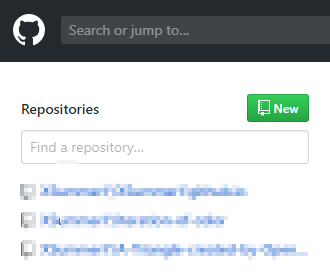
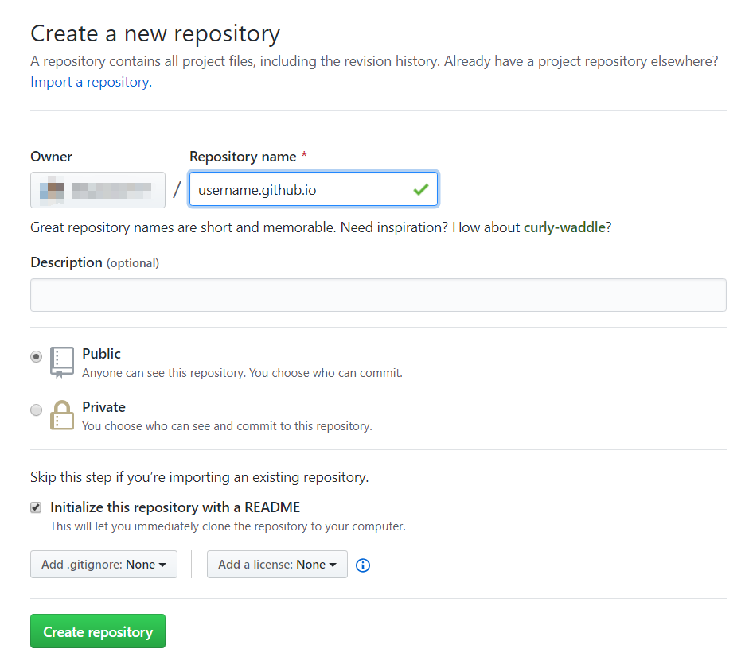
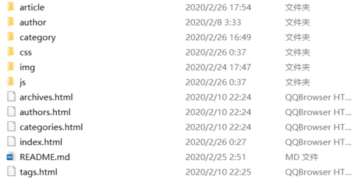
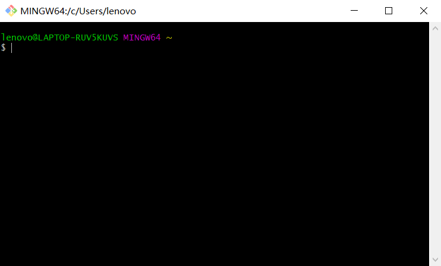
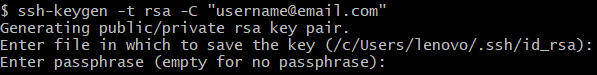
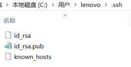
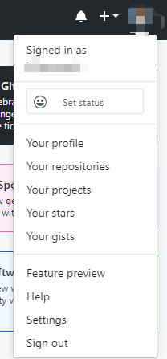
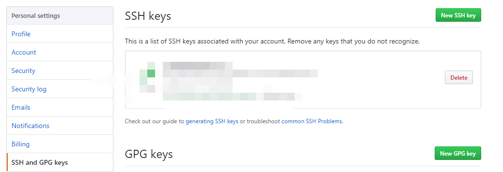
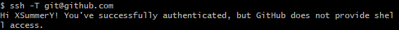
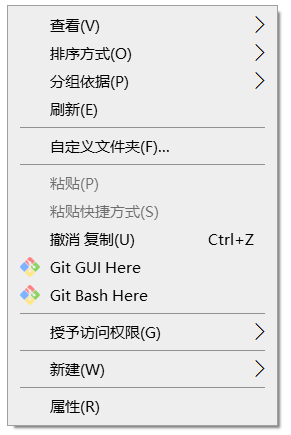

通过github提供的github page服务，我们可以非常简单地实现个人博客的搭建。
博客搭建过程大致分三步
1.创建github域名与空间
进入github官网：https://github.com/，注册并登录。
在主页的左方会列出你所拥有的仓库，点击"New"，开始创建一个新的仓库。

创建仓库页面如下：

(这里图片过大，缩小显示效果不好，后期会改成点击能放大)
在repository name中填入 username.github.io。username为用户名。选择Initialize this
repository with a README。然后点击create repository完成仓库的创建。
2.在本地生成个人博客
现阶段有许多工具帮助你快速创建静态博客。如基于python语言的Pelican,基于Node.js的hexo。只需将工具安装后，根据提示输入相关信息，便能生成静态网页。真正的懒人甚至能一路回车。
3.部署博客
进行到这个阶段，你已经在本地拥有了一个简单的个人博客，大概是下面的样子：

这时你可以通过git将本地的文件推送到github仓库中，进行网站的部署。
3.1 安装配置git
在git官网下载git客户端：https://git-scm.com/download/win
安装完成后打开git bash，这是一个类似Linux的终端。

执行下面的命令生成SSH访问私钥以及公钥。
ssh-keygen -t rsa -C "username@email.com""username@email.com"为用户的邮箱。
输入命令后会询问用户要存放密钥的地址和密码，直接回车默认即可。

在刚才提示的存放位置找到SSH密钥文件：

回到github，在右上角的菜单中找到Settings：

进入SSH and GPG keys项目：

选择New SSH key将id_rsa.pub中的字段复制进去以新建一个密钥。
在git 中输入命令：
ssh -T git@github.com显示如下时说明设置成功：

完成了这一步，我们就可以开始上传本地文件了。
打开存放静态网页的文件夹，右键打开git bash:

输入下列命令：
git init //初始化git
git config --global user.name "your name"
git config --global user.email @email.com" //设置用户信息
git remote add origin git@github.com:yourName/yourRepo.git
//选择连接的地址，在创建的仓库中会给出
git pull origin master //同步远程仓库
git add . //将本地文件加入暂存区
git commit -m "commit" //描述上传文件
git push origin master //上传仓库 至此，一个简单的博客搭建完成。使用你的仓库名username.github.io就能进入你的博客。需要注意的是github page部署需要几分钟时间。